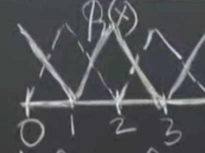
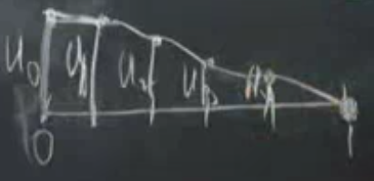
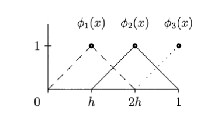

Sonlu Öğeler, 2. Bölüm
Üzerinden geçelim, sistem zayıf form ile ise başlar. Önceki dersin sonunda Galerkin fikrini tanıştırdık, sürekli diferansiyel denklem yerine onu ayrıksal temsil etmeye uğraş. Galerkin bunun için bazı deneme fonsiyonları kullanır onlara $\phi_1,...,\phi_N$ diyelim, ayrıca test fonksiyonları da vardır (çoğunlukla test fonksiyonları ile deneme, yani $\phi$ ve $v$ fonksiyonları aynıdır). Bugün işleyeceğimiz bu fonksiyonların nasıl seçildiği ve hazirlik asamasini gosterdikten sonra bunun verdigi $KU = F$ denklemin nasil cozuldugu. $K$ nereden geliyor, $F$ nereden geliyor? $F$ bir sekilde alttaki ikinci denklemin (oktan sonra) sag tarafindan geliyor, $K$ ise sol tarafindan.. Detaylari simdi gorecegiz.
$$ - \frac{\mathrm{d}}{\mathrm{d} x} \left( c(x) \frac{\mathrm{d} u}{\mathrm{d} x} \right) = f(x) \to \int _{0}^{1} c \frac{\mathrm{d} u}{\mathrm{d} x} \frac{\mathrm{d} v}{\mathrm{d} x} \mathrm{d} x = \int _{0}^{1} f(x) v(x) \mathrm{d} x $$
ki eger $u(1)=0$ ise $v(1) = 0$ (sinir sarti).
Sonlu ogeler metotunun (FEM) temeli $KU = F$. Ustteki denklemde okun sol tarafi diferansiyel denklemimiz, sinir sartlari vs ile "guclu formda", oktan sonrasi zayif form, ki onun da kendi sinir sartlari var. Sabit degiskenler guclu formdan zayif forma geciyor, ama serbest degiskenler gecmiyor. $v$'yi $u$'dan olan ufak sapmalar olarak gordugum icin eger $u$'yi sabitliyorsam $v$ de sabitleniyor.
Tum bunlari gorduk ama hala ayaklarimiz yere basmadi; bir cok fikirden bahsettik, ama simdi daha gercek dunyaya baglanacagiz. Gercek dunya demek tabii $\phi$'lerle alakali, hangi somut fonksiyonlari $\phi$ olarak sececegiz?
Acaba ornek bir $\phi$ ne olabilir? Mesela $x=2$ noktasinda tepe yapan bir parcali lineer fonksiyon kullanabilirim,
Bu fonksiyona $\phi_2(x)$ diyelim, 1 ila 3 arasinda 2 uzerinde tepe yapiyor diger yerlerde ya lineer egimi var, ya da degeri sifir. Her $\phi$ maksimum tepe noktasi 1 olarak secilabilir. Onun sagindaki $\phi_3$ olabilir, benzer bir fonksiyon sadece 3 degeri bazli tanimli. Buradaki ana amac sistemi basit ogeler uzerinde insa etmek. FEM'in ana fikri budur; $\phi$ icin basit fonksiyonlar kullan. Bu basitligin devami olarak $\phi$ ve $v$ fonksiyonlarini ayni sec.
Peki sinir noktalarinda ne olacak? Ustte serbest-sabit problemi cozecegim, sol uc nokta serbest, sag uc nokta sabit (sinir tanimlanmis).

Ustteki resme bakarsak, $x=0$ icin bir "yarim sapka" fonksiyonu tanimladim, $\phi_0$ diyelim, ve eger diger ucgen fonksiyonlara tam sapka dersek bu da yarim sapka. O noktada $\phi$ ve $v$'lerim kisitli degiller. Boylece elimde bes tane deneme fonksiyonu oluyor, $\phi_0$, $\phi_1$, $\phi_2$, $\phi_3$, $\phi_4$.
Amac nedir? Yaklasik FEM cozumum $U(x)$'in ustteki basit sapka fonksiyonlarinin bir kombinasyonu olmasini istiyorum.
$$ U(x) = U_0 \phi_0(x) + ... + U_4 \phi_4(x) $$
$U_0,..,U_4$ degerleri skalar, tek sayi.. onlar ilk basta bilinmeyen "agirlik" degerleri, $\phi$'leri belli sekilde carpacaklar ve bu carpimlarin toplami yaklasik bir $u$ olacak.
Bu kombinasyonlar neye benzerdi acaba?

Baslangictaki deger niye $u_0$? Cunku orada tum diger $\phi$ fonksiyonlari sifir seviyesinde, hemen yandaki $\phi_1$ bile orada sifir ve maksimum $\phi$ deger 1 oldugu icin baslangic degeri $u_0$.
Bu arada Galerkin, ismini tasiyan yontemi bulurken, aklinda erismeye ugrastigi belli bir cozum fonksiyonu vardi, ve sapka fonksiyonlarini oraya varmak icin secmisti fakat modern FEM yaklasimlarinda, yazilimlarinda bir temel fonksiyonu ilk bastan seceriz, problem hakkinda bir sey bilmesek bile. Sapka fonksiyonlari bu fonksiyonlardan biridir.
Sonlu ogeler temel fonksiyonlari dugum noktalariyla baglantilidir, bu baglamda sonlu farklilikler (finite differences) metotuna benzer (tabii FD ile esit aralikla bolmek gerekir, FEM ile bu zorunluluk yok), ogeler dugum noktalarina oturtuluyor. FEM ile sapka fonksiyonu ozelinde her dugum noktasindaki $u$ degerinin o noktadaki agirlik degeri ile ayni olmasini zorlamis oluyoruz; mesela 1 dugumundeki deger nedir? $u_1$! Cunku orada diger tum sapka fonksiyonlari sifirdir, sadece $\phi_1$ degeri 1, toplanan tum terimler yokoluyor geriye sadece $u_1 \phi_1 = u_1$ kaliyor.

FD benzerligi hakkinda, $KU=F$'i olusturdugumuzda onun bir FD denklemine oldukca benzedigini gorecegiz, arada yapisal farklar var tabii, FD ile ayriksal denklemleri biz tanimliyoruz, FEM ile sadece baz ogeleri seciyoruz denklemin ne oldugunu Galerkin yontemi bize soyluyor.
Simdi bize lazim olan ustteki resimdeki her nokta icin ayri bir denklem, yani toplam 5 tane denklem. Bu denklemler nereden gelecek? Kritik bir soru.
Bu denklemler zayif formdan gelecekler.
[devam edecek]
Alttaki Eski Bir Ders Video'sundan Alinmistir
Sonlu Öğeler Metodu (Finite Elements Method)
Bu metot differansiyel, kısmi differansiyel denklemleri (partial differential equations) yaklaşıksal olarak modelleme ve çözmenin yöntemleridir.
Formül: Başlangıç denklemi
$$ \frac{-d}{\mathrm{d} x} \bigg( c(x) \ \frac{\mathrm{d} u}{\mathrm{d} x} \bigg) = f(x) $$
İki tarafı da $v(x)$ ile çarpıyoruz ve 0 to 1 sınırlarıyla entegralini alıyoruz.
$$ \int_0^1 \frac{-d}{\mathrm{d} x} \bigg( c(x) \frac{\mathrm{d} u}{\mathrm{d} x} \bigg) v(x)\mathrm{d} x = \int_0^1 f(x)v(x) \mathrm{d} x $$
Parçalı entegral (integration by parts) formülü şöyledir:
$$ \int y \mathrm{d} z = y z - \int z \mathrm{d} y $$
Ana formülün bölümlerini, parçalı entegrale göre bölüştürürsek:
$$ dz = \frac{-d}{dx} \bigg( c(x) \ \frac{du}{dx} \bigg) dx $$
$$ z = - c(x) \ \frac{du}{dx} $$
$$ y = v(x) $$
$$ dy = \frac{dv}{dx}dx $$
Yukarıda $dz$ içinde $dx$ ve $\frac{1}{dx}$ birbirini iptal eder. Parçalı entegral formülünün sağ tarafına göre yerlerine koyarsak:
$$ \int_0^1 v(x)\mathrm{d} x \frac{-d}{\mathrm{d} x} \bigg( c(x) \frac{\mathrm{d} u}{\mathrm{d} x} \bigg) = - \bigg[ v(x) c(x) \frac{\mathrm{d} u}{\mathrm{d} x} \bigg]_{x=0}^{x=1} \int_0^1 c(x) \frac{\mathrm{d} u}{\mathrm{d} x} \frac{\mathrm{d} v}{\mathrm{d} x} \mathrm{d} x $$
Üstteki parçalı entegral açılımında sol taraf entegrale sınır değerleri aldığında, sağ taraftaki $yz$ sonucunun aynı sınır değerlerine tabi olduğuna dikkat edelim.
Differansiyel denklemde sınır koşulları $x=1$ durumunda $c(1)u'(1)=0$, ve $x=0$ durumunda $v(0)=0$ olarak biliniyor. O zaman üstteki denklemin sol tarafında $x=0$ ve $x=1$ koşulları için tanımlı bölüm $0 - 0 = 0$ olacaktır ve denklemden atılabilir. Geriye kalanlar
$$ \int_0^1 c(x) \frac{\mathrm{d} u}{\mathrm{d} x} \frac{\mathrm{d} v}{\mathrm{d} x} \mathrm{d} x = \int_0^1 f(x)v(x) \mathrm{d} x $$
Bu fonksiyonu Galerkin adlı bir matematikçi bulmuş, "zayıf form (weak form)" olarak adlandırılıyor.
Şimdi diyelim ki n tane test fonksiyonu seçtik $\phi_1(x),..,\phi(n)$ ve bu fonksiyonların $U_j$ sayıları ile çarpımının toplamını, yani bir tür kombinasyonunu $u(x)$ yerine kullanmaya karar verdik.
$$ U(x) = U_1 \phi_1+ ... + U_n\phi_n $$
O zaman
$$ U'(x) = U_1 \phi_1'+ ... + U_n\phi_n' $$
$$ = \sum_1^n U_j \frac{d\phi_j}{dx} $$
Şimdi $du / dx$ yerine $U'(x)$ koyarsak
$$ \int_0^1 c(x) \bigg( \sum_1^n U_j \frac{\mathrm{d}\phi_j}{\mathrm{d} x}\bigg) \frac{\mathrm{d} V_i}{\mathrm{d} x}\mathrm{d} x = \int_0^1 f(x)V_i(x)\mathrm{d} x $$
Dikkat edelim, $v(x)$ yerine $V_i(x)$ kullandık. Üstteki formül her i için yeni bir formül "üretecek". Niye $V_i$? Zayıf formdaki $v(x)$ formülünü de zaten biz uydurmuştuk, yani $v(x)$ biz ne istersek o olur. O zaman bu fonksiyonu n tane formül üretmek için bir numara olarak kullanıyoruz, n tane formül olunca matrisin n x n elemanını doldurabileceğiz ve çözüme erişebileceğiz. Ek not, çoğunlukla $V_i(x)$ için $\phi_i$ sembolü kullanılıyor.
Ayrıca formüldeki $U_j$ kısmını cekip çıkartırsak ve bir vektör içine koyarsak, geri kalanlar bir $K_{ij}$ matrisi içinde tutulabilir.
$$ K_{ij} = \int_0^1 c(x) \frac{\mathrm{d}\phi_j}{\mathrm{d} x} \frac{\mathrm{d} V_i}{\mathrm{d} x} \mathrm{d} x $$
Sağ taraf aynı şekilde i tane formül üretir
$$ F_i = \int_0^1 f(x)V_i(x) \mathrm{d} x $$
Final formül matrix formunda basit bir şekilde temsil edilebilecektir.
$$ KU = F $$
Örnek
Örnek olarak $-u" = 1$ denklemini çözelim. Not: Differansiyel denklemlerde sonuç bulmak demek bir "fonksiyon" bulmak demektir. Normal cebirsel denklemlerde sonuç bulmak değişkenlerin "sayısal" değerini bulmak demektir. Birazdan bulacağımız sonuç $u(x)$ "fonksiyonu" olacak.
Eğer denklem $-u"=1$ ise o zaman bu formülü ana forma uygun hale getirmek için $c(x) = 1$ olarak almamız gerekir. $-u"=1$ denkleminde eşitliğin sağ tarafı 1 olduğuna göre $f(x) = 1$ demektir.
Artık $\phi$ fonksiyonlarını seçme zamanı geldi. Bu fonksiyonların "toplamı" hedeflediğimiz fonksiyonu yaklaşıksal (approximate) olarak temsil edecek. Örnek olarak seçebileceğimiz bir fonksiyon "şapka fonksiyonu (hat function)" olarak bilinen üçgen fonksiyonlar olabilir. Alttaki figürde bu fonksiyonları görüyoruz.

Bu figürde x ekseninin h büyüklüğündeki parçalara bölündüğünü görüyoruz.
Entegralleri hesaplayalım
$$ F_1 = \int_0^1 V_1(x) \mathrm{d} x $$
Daha önce $V_1$ ve $\phi_1$'i aynı kabul ettiğimizi belirtmiştik.
Yukarıdaki entegralin aslında bir alan hesabı yaptığını görüyoruz. Sınırlar $0$ ve $1$ arasında, ama $2h$ ötesinde zaten $\phi_1$ fonksiyonu yok. $\phi_1$'in alanı nedir? Alan üçgenin alanı: Taban çarpı yükseklik bölü 2: $2h$, yüksekliği $1$, o zaman alan $(2h \times 1) / 2 = 1/3$
Benzer mantıkla bakarsak, $F_2$ ile $F_1$ aynı, yani $1/3$. $F_3$ ise onların yarısı, yani $1/6$.
$K_{ij}$ nasıl hesaplanacak? $c(x) = 1$ olduğu için formülden çıkarılabilir ve $V_1$ ve $\phi_1$'in aynı olduğuna söyledik:
$$ K_{ij} = \int_0^1 c(x) \frac{\mathrm{d}\phi_j}{\mathrm{d} x} \frac{\mathrm{d} V_i}{\mathrm{d} x} \mathrm{d} x $$
$$ K_{11} = \int_0^1 \bigg( \frac{\mathrm{d} V_1}{\mathrm{d} x} \bigg) ^2 \mathrm{d} x $$
$dV_1/dx$ nedir? Birinci şapka fonksiyonunun türevidir. Bu türeve bakarsak, $0$ ve $h$ arasında artı eğim (slope) $1/h$, $h$ ve $2h$ arasında eksi eğim $-1/h$ oluyor. Ama kare aldığımız için sonuç aynı, $1/h^2$. O zaman h = 1/3 olduğuna göre $1/(1/3)^2$, yani $dV_1/dx = 9$.
$$ K_{11} = \int_0^{2/3} 9 \mathrm{d} x = 9x \bigg|_0^{2/3} = (9)(2/3) - 0 = 6 $$
$K_{22}$ şeklen aynı fonksiyon parçasını temel aldığı için aynı değere sahip: 6. $K_{33}$ onların yarısı, eşittir 3.
$K_{12}$ farklı eğimlerin çarpımı anlamına gelir, yani $V_1'$ ile $V_2'$ çarpımı olur. Bu iki fonksiyona bakalım, 0 ile h arasında $V_2$ yok, eğim 0. İkisinin de sıfır olmadığı, çarpımda kullanılabilecek bir eğiminin olduğu tek aralık h ve 2h arası. Burada $V_1' = -3, V_2 = 3$.
$$ K_{12} = \int_{1/3}^{2/3} (3)(-3) \mathrm{d} x = -9x \bigg|_{1/3}^{2/3} = -6 - (-3) = -3 $$
Aynı şekilde $K_{23} = -3$. Ama $K_{13} = 0$ çünkü hiç çakışma yok.
Matrisi doldurursak,
$$ KU = F $$
$$
\left[\begin{array}{ccc}
6 & -3 & 0 \\
-3 & 6 & -3 \\
0 & -3 & 3
\end{array}\right]
\left[\begin{array}{c}
U_1 \\
U_2 \\
U_3
\end{array}\right]
=
\left[\begin{array}{c}
1/3 \\
1/3 \\
1/6
\end{array}\right]
$$
Python kodu
K = [[6., -3., 0],
[-3., 6., -3.],
[0., -3., 3.]]
f = [1./3., 1./3., 1./6.]
print np.linalg.solve(K,f)
[ 0.27777778 0.44444444 0.5 ]
print 5./18., 4./9., 1./2.
0.277777777778 0.444444444444 0.5
Rapor edilen değerler bu denklemin bilinen çözümü $u(x) = x - \frac{1}{2}x^2$ ile 0, h, 2h noktalarında (mesh points) birebir uyum gösterdiğini görüyoruz. Yani yaklaşıksal olarak differansiyel denklemi çözmeyi başardık.
Kaynaklar
[1] Strang, G., Computational Science and Engineering